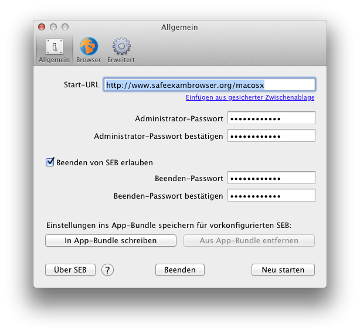
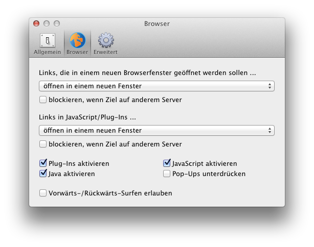
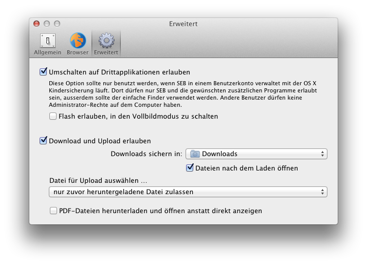

Benutzerhandbuch für Safe Exam Browser 2.0 und neuere Versionen
(momentan nur in Englisch verfügbar)
Safe Exam Browser – SEB für macOS öffnet ein Webbrowser-Fenster ohne Navigationselemente und versetzt den Computer in einen Kiosk-Modus, der den Wechsel zu anderen Applikationen oder das vorzeitige Beenden von SEB verhindert. SEB unterstützt derzeit die weit verbreiteten Learning-Management-Systeme Moodle und ILIAS direkt, kann aber auch mit den meisten anderen Web-basierten Online-Quiz- und E-Assessment-Systemen verwendet werden.
SEB deaktiviert das OS X Dock, den Programmumschalter (Befehlstaste+Tabulator), die Menüleiste, die Funktion Programme sofort beenden (Befehl+Option+Esc), das Neustarten (Befehl+ctrl+Medienauswurftaste) und Ausschalten (Befehl+Option+ctrl+Medienauswurftaste) des Computers, das Ausblenden der Applikation, Drucken und Exposé. Es kann auch festgelegt werden, ob Benutzer SEB beenden dürfen und ob dabei ein Passwort abgefragt wird.
Im Browser-Fenster gibt es kein Kontextmenü über den rechten (oder ctrl-) Mausklick. Links, die sonst ein neues Fenster öffnen würden, werden wahlweise generell blockiert, in demselben SEB-Browserfenster oder einem neuen Fenster geladen. SEB unterstützt Quicktime, Java und Flash-Inhalte (sofern der Flash Player installiert ist). Hyperlinks und Seitenaufrufe aus Javascript oder aus Flash- und anderen Plugins heraus, die in einem neuen Fenster geöffnet werden sollen, können wahlweise ignoriert werden, wenn sie auf einen anderen Server als den der aktuell geöffneten Webseite führen.
SEB für Mac OS X basiert auf dem WebKit-Browsersystem, das auch von Safari, Apple Mail und vielen neuen Open-Source Browsern wie Google Chrome benutzt wird (im Gegensatz zum Mozilla Firefox/XULRunner/Gecko System, das bei SEB für Windows eingesetzt wird). Es gibt einige kleine Unterschiede in der Darstellung von Webseiten und Inhalten von ILIAS und Moodle, Sie sollten deshalb bestehene Quizzes in SEB für Mac OS X testen, bevor Sie diese in Prüfungen verwenden.
SEB erkennt, ob er in einer virtuellen oder "nativen" Umgebung gestartet wurde und verweigert notfalls den Betrieb. Der VM-Detektor erhöht so die Hürde für Betrugsversuche in nicht gemanagten Umgebungen.
SEB für Mac OS X kann zusammen mit weiteren Programmen (sogenannten Drittapplikationen) während einer Prüfung verwendet werden. Download einer in der Online-Prüfung verlinkten Datei, automatisches Öffnen in der dazugehörigen Drittapplikation und der Upload der bearbeiteten Datei zurück in die Prüfung/auf den LMS-Server ist möglich und kann in den Einstellungen konfiguriert werden. Dazu und für Einsätze mit hohen Sicherheitsanforderungen sollte die jetzige Version von SEB für Mac OS X in einer kontrollierten Umgebung verwendet werden. Im untenstehenden Abschnitt ist beschrieben, mit welchen Massnahmen man eine sehr sichere Umgebung erzielen kann.
Das DMG-Disk-Image kann hier heruntergeladen werden. Doppelklicken Sie auf die geladene Datei SafeExamBrowser.dmg, falls das Disk-Image SafeExamBrowser nicht schon automatisch geöffnet wurde. Sie können nun die Safe Exam Browser-Applikation in Ihr Programm-Verzeichnis oder einen beliebigen anderen Ordner in Ihrem Mac ziehen. SEB kann aber auch direkt aus dem geöffneten Disk-Image oder einem Netzwerklaufwerk heraus gestartet werden.
Nachdem SEB gestartet wurde, werden alle momentan laufenden Programme ausgeblendet und alle angeschlossenen Bildschirme mit einem schwarzen Hintergrund abgedeckt. Auf dem Hauptmonitor öffnet SEB sein bildschirmfüllendes Webbrowser-Fenster (das aber auch verkleinert und bewegt werden kann). SEB lädt die Webseite mit der voreingestellten Start-URL, was einige Sekunden dauern kann. Bis eine andere Start-URL eingestellt wird (siehe Konfiguration), öffnet SEB für Mac OS X die Projektwebsite und zeigt diese Dokumentation an, ausserdem wird ein Hinweis angezeigt, wie das Programm wieder beendet werden kann: Drücken Sie dazu einfach die Befehls- und Q-Taste. Die Einstellungen werden mit den Tasten F3 + F6 aufgerufen (auf aktuellen Mac-Tastaturen gleichzeitig fn drücken).
SEB hat keine Navigationsknöpfe, aber sofern dies in den Einstellungen aktiviert ist, kann Befehlstaste+Cursortaste links verwendet werden, um sich im Browserverlauf zurück zu bewegen und Befehlstaste+Cursortaste rechts, um vorwärts zu springen. Befehlstaste+R lädt die aktuelle Seite neu.
Um SEB zu beenden (sofern die Standardeinstellung benutzt wird), drücken Sie Befehlstaste+Q oder den roten Knopf zum Schliessen des Browserfensters. Das Beenden von SEB kann im Fenster Einstellungen ausgeschaltet oder mit einem Passwort geschützt werden. Nach dem Beenden von SEB werden die vor dem Starten sichtbaren Programme wieder eingeblendet.
SEB für Mac OS X besitzt ein Fenster Einstellungen, das zum bequemen Konfigurieren von SEB verwendet werden kann. Nachdem SEB gestartet wurde, drücken Sie die Tasten F3 + F6 (auf aktuellen Mac-Tastaturen gleichzeitig fn drücken).

In diesem Fenster können sie die folgenden Einstellungen vornehmen:
Einstellungen in Sektion Allgemein
- Start-URL: Vollständige URL (beginnend mit http:// oder https://) der Seite, die beim Starten von SEB geöffnet werden soll.
- Einfügen aus gesicherter Zwischenablage: SEB speichert den Inhalt der Zwischenablage (sofern es sich um einen Text handelt) beim Aufstarten, bevor diese gelöscht wird. Mittels dieses Links wird der gesicherte Text in das Start-URL-Feld eingefügt.
- Administrator-Passwort: Passwort, das beim Aufrufen der Einstellungen abgefragt wird. Es wird empfohlen, eines zu setzen!
- Administrator-Passwort bestätigen: Administrator-Passwort wiederholen. Solange es nicht identisch ist wie das Administrator-Passwort im Feld darüber, wird Bitte Passwort bestätigen unter dem Eingabefeld angezeigt und die Einstellungen können nicht gespeichert werden.
- Beenden von SEB erlauben: Wenn angewählt, können Benutzer SEB mit Befehlstaste+Q verlassen. Ansonsten kann der Mac nur per erzwungenem Neustart oder Ausschalten beendet werden oder mit dem Knopf "Beenden" in diesem Fenster.
- Beenden-Passwort: Dieses Passwort wird abgefragt, wenn Benutzer SEB mit Befehlstaste+Q oder dem roten Knopf zum Schliessen des Browserfensters beenden wollen. Wenn kein Beenden-Passwort eingegeben ist, wird nur die Frage angezeigt Sind Sie sicher, dass Sie SEB beenden wollen?.
- Beenden-Passwort bestätigen: Beenden-Passwort wiederholen. Solange es nicht identisch ist wie das Administrator-Passwort im Feld darüber, wird Bitte Passwort bestätigen unter dem Eingabefeld angezeigt und die Einstellungen können nicht gespeichert werden.
- In App-Bundle schreiben: Schreibt die Einstellungen in das Safe Exam Browser Programm-Bundle. Danach wird diese Kopie von SEB nach dem Aufstarten immer diese Einstellungen benutzen. Dies funktioniert nur, wenn Schreibzugriff auf das Verzeichnis möglich ist, in dem SEB liegt, es kann also nötig sein, SEB in ein Verzeichnis zu verschieben oder zu kopieren, in das Sie Schreibzugriff haben. Ein Dialogfenster informiert darüber, ob das Schreiben der Einstellungen erfolgreich war oder nicht.
Diese Funktion ist nicht in der Mac App Store Version von Safe Exam Browser vorhanden, einerseits wegen Restriktionen von Apple, andererseits weil diese Funktionalität nicht zum Szenario von Softwareverteilung über den Mac App Store passt. Das nächste grössere SEB-Release wird eine Möglichkeit zur Vor-Konfigurierung von SEB bieten, die mit dem App Store kompatibel ist.
- Aus App-Bundle entfernen: Entfernt die Einstellungen aus dem Safe Exam Browser Programm-Bundle, danach werden wieder die Einstellungen aus dem Ordner Library/Preferences des Benutzers verwendet. Diese Schaltfläche ist nur aktiviert, wenn überhaupt Einstellungen im App-Bundle gespeichert sind.
- Über SEB: Informationen über Safe Exam Browser – SEB anzeigen. Klicken Sie in das Fenster um es zu schliessen.
- Hilfe "?": Zeigt dieses Online-Manual an. Den Knopf Neu starten hier im Einstellungen-Fenster benutzen, um wieder die Start-URL anzuzeigen. Das Einstellungen-Fenster bleibt offen, falls es durch das Browser-Fenster verdeckt wird, können Sie es mit derselben Tastenkombinationen wie oben erwähnt wieder anzeigen.
Sie können die Einstellungen mit einem der drei untenstehenden Schaltflächen verlassen:
- Fenster schliessen (Standardknopf in der Fenstertitelleiste): Speichert Einstellungen und schliesst dieses Fenster. Wenn die Start-URL geändert wurde, wird SEB neu gestartet, damit die neue Webseite angezeigt wird.
- Neu starten: Speichert Einstellungen und startet SEB neu, die Webseite mit der Start-URL wird geladen.
- Beenden: Speichert Einstellungen und beendet SEB.

Einstellungen in Sektion Browser
- Links, die in einem neuen Browserfenster geöffnet werden sollen ... Diese Popup-Liste bietet drei Optionen an:
- werden generell blockiert
- öffnen im selben Fenster: Dies entspricht dem Verhalten von SEB für Mac OS X vor Version 1.5.
- öffnen in einem neuen Fenster
- blockieren, wenn Ziel auf anderem Server: Hyperlinks werden ignoriert, wenn sie auf einen anderen Server als den der aktuellen Webseite führen.
- Links in JavaScript/Plug-Ins ...Diese Popup-Liste bietet drei Optionen für Hyperlinks aufgerufen aus JavaScript oder Plug-Ins (wie Flash) an:
- werden generell blockiert
- öffnen im selben Fenster: Dies entspricht dem Verhalten von SEB für Mac OS X vor Version 1.5, aber dort wurden Links nur geöffnet, wenn sie nicht auf einen anderen Server führten (siehe untenstehende Checkbox).
- öffnen in einem neuen Fenster
- blockieren, wenn Ziel auf anderem Server: Hyperlinks werden ignoriert, wenn sie auf einen anderen Server als den der aktuellen Webseite führen. Dies kann auch zum Ausfiltern von gewissen auf einer Seite eingebetteten Cross-Site-Inhalten dienen, allerdings funktionieren möglicherweise auch Weiterleitungen nicht. Es empfiehlt sich, diese Option gut auszutesten, bevor sie mit einer Online-Prüfung verwendendet wird!
- Plug-Ins aktivieren: Erlaubt Web-Plug-Ins wie Flash. Aus Sicherheitsgründen wird empfohlen, diese Option auszuschalten, wenn keine Plug-In-Inhalte benötigt werden.
- JavaScript aktivieren: JavaScript aktivieren. Bitte beachten: Die meisten modernen Websites benötigen JavaScript für volle Funktionalität.
- Java aktivieren: Java-Applets zulassen.
- Pop-Ups unterdrücken: Blockiert Pop-Up-Fenster (häufig Werbung), die per JavaScript ohne eine Benutzeraktion wie einen Klick auf eine Schaltfläche geöffnet werden.
- Vorwärts-/Rückwärts-Surfen erlauben: Das Ausschalten der Funktion, auf bereits besuchte Seiten zurückzukehren (per Befehlstaste + Cursor links) erhöht die Sicherheit, weil es ansonsten möglich sein kann, eine Prüfung zu verlassen, indem man auf eine Startseite ausserhalb des Prüfungs-Servers zurückkehrt.

Einstellungen in Sektion Erweitert
- Umschalten auf Drittapplikationen erlauben: Wenn diese Schaltfläche aktiviert ist, wird der Kiosk-Modus von SEB reduziert. So funktioniert der Programmumschalter (Befehlstaste+Tabulator), damit ist es möglich, auf andere laufende Applikationen zu wechseln.
Diese Option sollte nur benutzt werden, wenn SEB in einem Benutzerkonto verwaltet mit der OS X Kindersicherung läuft. Dort dürfen nur SEB und die gewünschten zusätzlichen Programme erlaubt sein, ausserdem sollte der einfache Finder verwendet werden (siehe Sichere Umgebung). Andere Benutzer dürfen keine Administratorrechte auf dem Computer haben.
- Flash erlauben, in den Vollbildmodus zu schalten: Videos mittels Flash im Vollbildmodus abzuspielen ist ein Sicherheitsproblem. Deshalb wird dringend empfohlen, HTML5-Video anstatt Flash zu benutzen (dort ist der Vollbildmodus kein Problem). Je nach verwendetem Flash-Videoplayer und Mac kann es schwierig sein, aus dem Vollbildmodus auszusteigen (am besten die esc-Taste benutzen). Deswegen empfiehlt es sich, den Flash-Vollbildmodus hier auszuschalten, wenn er nicht benötigt wird. Bei deaktiviertem Umschalten auf Drittapplikationen ist der Flash-Vollbildmodus grundsätzlich nicht möglich.
- Download und Upload erlauben: Normalerweise zu verwenden, wenn das Umschalten auf Drittapplikationen erlaubt ist.
- Downloads sichern in: In diesem Popup-Menü kann das Download-Verzeichnis festgelegt werden.
- Dateien nach dem Laden öffnen: Geladene Dateien werden automatisch mit der zugehörigen Applikation geöffnet, diese muss im System für den entsprechenden Dateityp korrekt eingestellt sein!
- Datei für Upload auswählen … SEB kann den Benutzer die Upload-Datei manuell auswählen lassen (wie üblich) oder automatisch die selbe Datei auswählen, die zuvor heruntergeladen wurde. Es gibt drei mögliche Optionen:
- manuell mit Dateidialog
- versuchen, die zuvor heruntergeladene Datei auszuwählen: Wird die Datei nicht gefunden, erscheint ein Dateidialog und der Benutzer kann eine andere Datei manuell auswählen.
- nur zuvor heruntergeladene Datei zulassen:
Wird die Datei nicht gefunden, erscheint eine Fehlermeldung. Diese Einstellung kann zusätzliche Sicherheit bringen, weil nur diejenigen Dateien heraufgeladen werden können, die zuvor heruntergeladen wurden (in derselben Browser-Session, d.h. seit SEB gestartet wurde). Falls mehrere Dateien heruntergeladen wurden, wird mit der Datei auswählen (oder ähnlich benannten) Schaltfläche im Browserfenster zuerst die zuletzt heruntergeladene Datei ausgewählt. Wird die Schaltfläche erneut betätigt, werden nacheinander die in der aktuellen Session heruntergeladenen Dateien ausgewählt.
- PDF-Dateien herunterladen und öffnen anstatt direkt anzeigen: PDF-Dateien werden nicht von SEB angezeigt, sondern heruntergeladen und geöffnet (wenn Dateien nach dem Laden öffnen aktiviert ist!) und zwar mit der im Finder eingestellten Applikation (üblicherweise Vorschau oder Adobe Acrobat). Diese Option ist sinnvoll, wenn Umschalten auf Drittapplikationen erlauben aktiviert ist und Sie PDF-Formulare benutzen möchten, die von den Prüfungskandidaten/Benutzern ausgefüllt werden sollen.
Die SEB Einstellungen werden gemäss Mac OS X Standards im Verzeichnis Library/Preferences/ des angemeldeten Benutzers gespeichert. Die Datei mit dem Namen org.safeexambrowser.Safe-Exam-Browser.plist wird erstellt, nachdem SEB das erste Mal gestartet wird, die Einstellungen geöffnet und geändert werden. Diese Datei kann in das Benutzer-Verzeichnis Library/Preferences/ anderer Rechner verteilt werden (beispielsweise in einem Computerraum einer Universität oder Schule). Damit wird SEB auf diesen Rechnern die gleiche Start-URL öffnen und dieselben Passwörter verwenden. Oder verwenden Sie In App-Bundle schreiben, um eine vorkonfigurierte Kopie von SEB zu generieren (diese Funktion ist nicht in der Mac App Store Version verfügbar).
Obwohl SEB die Preferences-Datei teilweise verschlüsselt, sollte verhindert werden, dass Benutzer auf diese Datei zugreifen können, siehe Sichere Umgebung für Prüfungen mit SEB für Mac OS X. Diese Standard-plist-Datei kann auch mit Apple's Xcode bearbeitet werden.
macOS ab Version 10.6 auf 64-bit Intel Mac
Auf 32-Bit Macs (wie der ersten Generation Intel Core Solo und Core Duo Mac Mini, MacBook und iMac) sind Web-Plugins aus Sicherheitsgründen deaktiviert.
Wie bereits erwähnt, ist es sicherer, SEB für Mac OS X in einer kontrollierten Systemumgebung zu verwenden, für den Einsatz von Drittapplikationen ist es sogar dringend notwendig. Wenn Sie ein separates Benutzerkonto mit den untenstehend beschriebenen Einstellungen einrichten, können Sie eine sehr sichere Prüfungsumgebung erzielen.
- Erstellen Sie ein Benutzer-Konto mit Standard- oder Verwaltet- (mit aktivierter Kindersicherung) Rechten (Systemeinstellungen -> Benutzer). Falls Sie Drittapplikationen parallel zu SEB laufen lassen möchten, müssen Sie ein mit der Kindersicherung verwaltetes Konto verwenden.
- Sie können Safe Exam Browser in den Benutzereinstellungen zu den Anmeldeobjekten hinzufügen, dann wird SEB automatisch gestartet, wenn sich der Prüfungs-Benutzer anmeldet.
- In Anmeldeoptionen sollten sie den Haken bei Menü für schnellen Benutzerwechsel zeigen als möglichst entfernen, zumindest falls die Prüfungsteilnehmer Zugang zu einem anderen Benutzerkonto auf dem Rechner haben.
- Falls Sie ein Benutzer-Konto mit aktivierter Kindersicherung und Drittapplikationen verwenden, sollten Sie (Systemeinstellungen -> Kindersicherung) die Optionen Einfachen Finder verwenden und Nur ausgewählte Programme erlauben einzig mit Safe Exam Browser und den gewünschten Drittapplikationen als erlaubte Programme benutzen.
- Bei der Kindersicherung auf der Seite Inhalt können Sie unter Zugriff nur auf diese Websites erlauben einzig die Adresse Ihres LMS-/Prüfungsservers einstellen. Dies empfielt sich insbesondere bei der Verwendung von Drittapplikationen, weil viele Programme über die Hilfefunktion oder das Über ...-Fenster auf irgendwelche Adressen im Internet verlinken (z.B. Online-Hilfe, Herstellerseite). OSX startet dann den Standard-Webbrowser, selbst wenn dieser in der Kindersicherung nicht zugelassen ist. Wenn in der Kindersicherung nur der LMS-Server erlaubt ist, gelangen Prüfungsteilnehmer so trotzdem nicht frei ins Internet.
- In Systemeinstellungen -> Freigaben sollten Sie entweder alles ausschalten, insbesondere Bildschirmfreigabe, Dateifreigabe, entfernte Anmeldung und entfernte Verwaltung oder mit ordentlichen Passwörtern schützen. Die Benutzer dürfen aber in keinem Fall Administrator-Rechte auf diesem Rechner besitzen!
- Richten Sie ein Open-Firmware-Passwort auf dem Computer ein. Beim Open-Firmware-Passwort handelt es sich um eine Sicherheits-Funktion, die auf modernen Macintosh Systemen zur Verfügung steht. Wenn das Open-Firmware-Passwort aktiviert wird, führt der Computer ein sicheres Aufstarten durch. So wird einerseits das Aufstarten von einem anderen Volume (einer anderen Partition, einer CD/DVD, einem Memorydrive oder einer externen Festplatte) verhindert, nur der Start vom voreingestelten Startlaufwerk (in Systemeinstellungen -> Startvolume) ist möglich. Andererseits wird verhindert, dass der Einzelbenutzer-Modus durch das Drücken von Befehlstaste+S während des Aufstartens aktiviert wird. Ein Administrator kann das Open-Firmware-Passwort mittels des Firmware Password Utility-Programms setzen, das von der macOS Systemdisk kopiert werden kann (befindet sich auf dieser unter /Applications/Utilities/, im Finder nicht sichtbar, Terminal benutzen).
Das Open-Firmware-Passwort wird zurückgesetzt, wenn die physikalische Arbeitsspeicherkonfiguration geändert wird (RAM-Module entfernt oder hinzugefügt werden). Bei Systemen, auf denen das Open-Firmware-Passwort benutzt wird, sollte also verhindert werden, dass Benutzer das Rechner-Gehäuse öffnen können.
Safe Exam Browser für macOS: © 2010-2018 Daniel R. Schneider, ETH Zürich, Lehrentwicklung und -technologie (LET), basierend auf der Originalidee des Safe Exam Browser von Stefan Schneider, Universität Giessen
Projekt-Konzept: Dr. Thomas Piendl, Daniel R. Schneider, Dr. Dirk Bauer, Karsten Burger, Marco Lehre, Brigitte Schmucki, Oliver Rahs. Französische Lokalisierung: Nicolas Dunand
Quellcode: Veröffentlicht unter Mozilla Public License MPL 1.1
WebKit: BSD Lizenz Apple, LGPL 2.0/2.1
Dieses Projekt wurde im Rahmen des von SWITCH geleiteten Programms "AAA/SWITCH – e-Infrastructure für e-Science" durchgeführt und erhielt finanzielle Unterstützung durch den ETH-Rat.